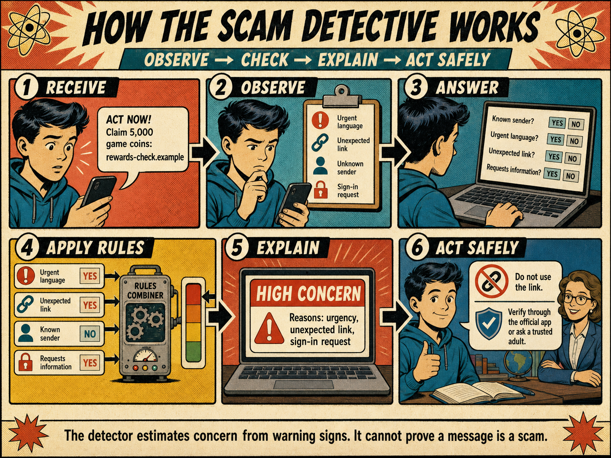

A fictional gaming-reward message has arrived. Your job is to design a small program that notices warning signs, explains its judgement and recommends a safe next step.
60 minutesAO1 · AO2 · AO3Planning before Python
Stay safe: every message and link in this lesson is invented. Never open, copy or test a real suspicious link.

Observe. Model. Test. Explain.
YEAR 9 · WEEK 2 PROJECT
Scam Detective Lab
Saved locally
ONE CASE · ONE PROGRAM · ONE TESTABLE PLAN
Help Sam judge a message safely.
You will not write Python today. You will create the plan that makes next lesson's programming possible.
Evidence todayClassified cluesProgram purposeFive smaller jobsIPO modelBuilt and traced algorithm
The detector estimates concern. It does not click links, collect real messages or declare “scam confirmed”.
01
DO NOW · 6 MINUTES · AO1 + AO2
Open the case file
First understand the situation. Then decide which details matter.
CASE 01
Sam's gaming-reward message
Sam is 13 and plays an online game after school. A message appears from PrizePulse Alerts:
“ACT NOW! Your game-credit reward expires today. Sign in to claim 5,000 coins: rewards-check.example”
Sam does not remember entering a competition. Sam wants help deciding what to do next without opening the link.
Select the picture to enlarge it.
Warm-up: remember two thinking tools
1
Decomposition
Split one big job into smaller jobs.
Big job: organise a school event. Smaller jobs: choose a room, invite people, prepare equipment.
2
Abstraction
Keep details that affect the solution; ignore details that do not.
The message wording affects Sam's judgement. The colour of Sam's notebook does not.
Clue sorter: what should the program notice?
For each detail, decide whether it is a warning sign used by the detector or a neutral detail to ignore.
02
MAIN ACTIVITY 1A · 8 MINUTES · AO2
Give the program one clear job
Before decomposing anything, agree what the whole program is supposed to achieve.
THE BIG JOB
Ask Sam about four observable details, use simple rules to estimate concern, explain the reasons and recommend a safe next step.
User need
Why a person needs the solution.
Sam needs help noticing warning signs before deciding what to do.
Requirement
A function the program must perform.
The program must ask whether the message uses urgent language.
Success criterion
Evidence we can observe during a test.
For the high-concern test, it displays the level, reasons and safe advice.
Build Sam's design brief
Choose the three functions we will build
Tick only the statements that describe this detector. Each chosen requirement must be testable.
Sequence sprint: three users, three safe journeys
The program must follow a sensible order for different situations. Choose the sequence that protects the user and still gives useful information.
SCENARIO A
Gaming reward
A message promises coins and includes an unexpected sign-in link.
SCENARIO B
School email
A familiar teacher emails from the usual address with no link or urgent language.
SCENARIO C
Unclear response
The detector asks “Unexpected link? YES/NO” and the user types MAYBE.
03
MAIN ACTIVITY 1B · 12 MINUTES · AO2
Decompose the big job, then build the IPO model
Here, “decompose” means splitting the Scam Detective into five exact programming jobs.
What are we decomposing?
The big job is: turn four observations about Sam's message into an explained concern level and a safe next step.
Why? The program needs facts before it can make a decision.
2
VALIDATE
Job: accept only YES or NO.
Example: if Sam types MAYBE, display “Please enter YES or NO” and ask again.
Why? The rules cannot reliably use unclear input.
3
APPLY RULES
Job: start concern at 0 and add 1 for each warning sign.
Example: urgent = YES means concern ← concern + 1.
Why? Rules turn observations into a repeatable calculation.
4
CHOOSE A LEVEL
Job: compare the final score with boundaries.
Rules: 0 = LOW, 1–2 = MEDIUM, 3–4 = HIGH concern.
Why? A level is easier for the user to interpret than a number alone.
5
EXPLAIN + ADVISE
Job: display the level, the warning signs found and a safe next step.
Example: “HIGH concern: urgent language and an unexpected link. Do not open it; show a trusted adult.”
Why? The output should support a decision, not just show a score.
Sequence check
Choose the job performed at each point. Use the cards above if you are unsure.
INPUT
Facts supplied before the decision.
→PROCESS
Work performed inside the program.
→OUTPUT
Information produced for the user.
IPO evidence tray: classify the mixed items
Refer back to the agreed first version.
Some items belong in its IPO model. Others might sound useful, but this version does not collect or use them. For every item, choose:
Input — information supplied to the program;
Process — work performed inside the program;
Output — information presented to the user;
Not used — outside the requirements of this version.
04
MAIN ACTIVITY 2 · 28 MINUTES · AO1 + AO2 + AO3
Read, describe, build and trace algorithms
Begin with complete samples, explain their logic, then construct and test a Scam Detective algorithm.
PLAIN ENGLISH
Ask whether the message is urgent. If it is, add one concern point. Then show the score.
PSEUDOCODE
Readable instructions for an algorithm. It is not Python and does not need exact Python punctuation.
How to read a complete algorithm
Do not try to translate one line at a time without understanding the whole job. Read pseudocode in four passes:
1PURPOSE
What problem is the complete algorithm solving?
2INPUT
What information is supplied?
3PROCESS + DECISIONS
What is calculated, compared or repeated?
4OUTPUT
What does the user finally see?
Worked sample: tournament entry checker
Read the whole example first. Then use the annotations to see how each group of lines contributes to one complete job.
checks ← 0INPUT registered
INPUT permissionIF registered = YES THEN
checks ← checks + 1
ENDIF
IF permission = YES THEN
checks ← checks + 1
ENDIFIF checks = 2 THEN
OUTPUT "Ready to enter"
ELSE
OUTPUT "One or more checks are missing"
ENDIF
Initialise
Create checks and start it at zero.
Input
Collect two YES/NO facts about the player.
Process
Test each fact. Every YES adds one to checks.
Output decision
Only a total of two selects “Ready to enter”. Every other total selects the alternative message.
A strong description of this pseudocode
“This algorithm checks whether a player is ready to enter a tournament. It inputs whether the player is registered and has permission. It adds one to checks for each YES answer. If the final value is 2, it displays ‘Ready to enter’; otherwise, it explains that at least one check is missing.”
Notice: the description explains the whole algorithm in order. It does not copy every line or simply say “it checks things”.
Guided practice 1: describe a new scoring algorithm
SAMPLE B · SCHOOL EVENT MESSAGE
A student receives a message about a school event. The algorithm checks two observable details before suggesting what to do.
concern ← 0
INPUT sender_known
INPUT unexpected_link
IF sender_known = NO THEN
concern ← concern + 1
ENDIF
IF unexpected_link = YES THEN
concern ← concern + 1
ENDIF
IF concern = 0 THEN
OUTPUT "No warning signs found"
ELSE
OUTPUT "Check before acting"
ENDIF
Guided practice 2: describe validation and repetition
SAMPLE C · VALID ANSWER CHECKER
This algorithm does not calculate concern. Its job is to make sure the program receives one usable answer.
INPUT answer
WHILE answer ≠ YES AND answer ≠ NO
OUTPUT "Enter YES or NO"
INPUT answer
ENDWHILE
OUTPUT "Answer accepted"
Vocabulary bridge: five building blocks you will now use
1concern ← 0
Create the variable and give it a starting value.
2INPUT urgent
Collect one YES/NO observation.
3IF urgent = YES THEN
Ask a question that is either true or false.
4concern ← concern + 1
Only when the condition is true, change the variable.
5OUTPUT concern
Show the final value to the user.
Mini-build: complete the one-sign algorithm
Choose the line that completes each purpose. Read down the finished algorithm like a recipe.
Sequence workshop: repair three mini-algorithms
Each scenario focuses on a different kind of order. Think about what information must exist before the next instruction can work.
REPAIR 1 · DATA
When can a rule use urgent?
The program must collect the answer before testing it, and test it before changing the score.
REPAIR 2 · VALIDATION
What if the input is MAYBE?
Choose the instruction immediately after an invalid answer is detected.
REPAIR 3 · OUTPUT
When should the level be displayed?
All four warning-sign rules must run before the final branch is chosen.
How does the mini-algorithm grow into the full detector?
The same IF → add one pattern is repeated for each warning sign:
unknown sender
urgent language
unexpected link
request for sign-in information
After all four decisions, the program compares the total with the boundaries: 0 LOW, 1–2 MEDIUM, 3–4 HIGH.
Trace lab: what does “trace” mean?
Tracing means following an algorithm one step at a time using fixed test data. Each time the variable changes, record its new value. This helps us find mistakes before coding.
Read the four test answers.
Predict the final score and level.
Select Run next step.
Watch which rule runs and how concern changes.
Compare the result with your prediction.
TEST CASE B · FICTIONAL
School tournament message
Unknown sender?
NO
Urgent language?
YES
Unexpected link?
YES
Requests sign-in information?
NO
concern?Not started
Make both predictions, then run the first step.
Peer check that everyone can complete
Partner A selects one new test case below.
Partner B predicts its score and level without being told the answer.
Select Check peer prediction.
If there is a difference, return to the four scoring rules and find the first missed point.
★
OPTIONAL LEVEL-UP LAB · EARLY COMPLETERS · AO3
Improve the detector through three quick experiments
These are small design decisions you can test immediately—not extra essay questions.
MISSION 1
Handle an unclear answer
The program asks “Urgent language? YES/NO” and the user types MAYBE. What should happen?
MISSION 2
Test a boundary
HIGH concern begins at 3. A test case scores exactly 3. Which branch must run?
MISSION 3
Improve the wording
Which HIGH-concern output is accurate, useful and honest about the detector's limit?
LEVEL-UP COMPLETE
You improved robustness through validation, boundary testing and honest output design. Your Python studio is now unlocked.
OPTIONAL CREATOR MODE
Program your own Scam Detective
Turn today's plan into a working command-line Python program. This is your program: choose your questions, rules and wording.
Python 3Browser studio
Your minimum mission
Ask about at least two observable warning signs.
Use a concern variable.
Use selection with if.
Display a concern level and a safe next step.
Do not claim that the message is definitely a scam.
Need a small starting hint?
Start with concern = 0. Collect an answer using input(). An answer can add one point inside an if statement. Test one small part before adding another.
Program console
Complete the three missions above to unlock Python.
05
PLENARY · 6 MINUTES · AO1 + AO2 + AO3
Three questions, three assessment objectives
Show what you know, apply and can evaluate.
AO1 · KNOW
What is decomposition?
AO2 · APPLY
Sam's test has two warning signs. Which level should the planned rules produce?
AO3 · EVALUATE
Which change most improves the detector?
✓
REVIEW · EXPORT · SUBMIT
Your Scam Detective design evidence
Check the decisions you made before creating the PDF.
Optional supporting image
If you also planned on paper, upload or paste one clear image. Do not upload real suspicious messages, links, passwords or personal information.
Click here, then paste a screenshot with Ctrl+V or Cmd+V.
Submit to Microsoft Teams
Select Download PDF report.
Open it and check your name, class and decisions.
Upload it to Week 2 Project.
If you used Creator Mode, also upload your downloaded Python .py file.